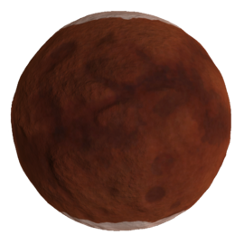

Duna
Duna is the fourth planet from Kerbol and the fourth-largest planet. It is the Mars analog for Kerbal Space Program. It has one tidally-locked and large natural satellite, the moon Ike. Duna is a terrestrial planet with a red-brown surface and polar ice caps similar to that of Kerbin.
In- Game Description:
Also known as the red dot that you can see if you squint at it really hard, Duna has long been a wonder to Kerbalkind. The planet has been held in much awe, due to its striking red color and stark contrast to the color green.
Home Page